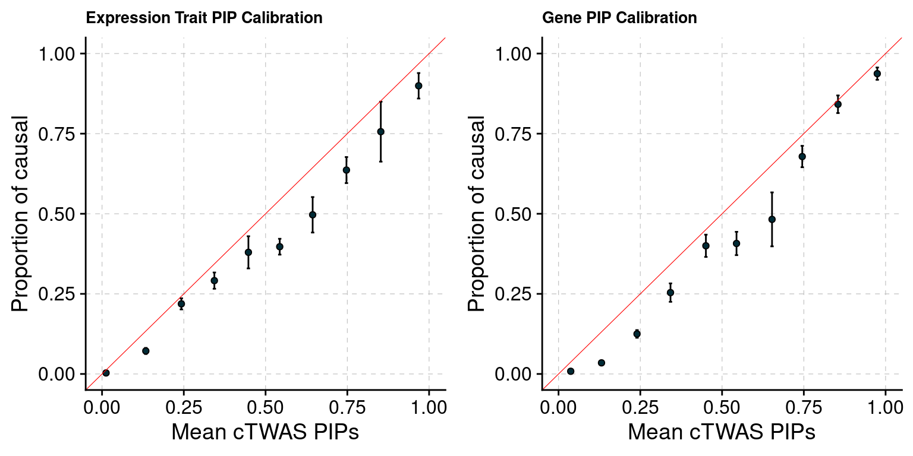
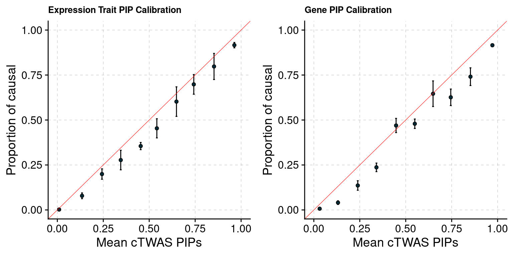

Seven Correlated Tissues Simulation
shengqian
2023-12-30
Last updated: 2024-01-16
Checks: 6 1
Knit directory: multigroup_ctwas_analysis/
This reproducible R Markdown analysis was created with workflowr (version 1.7.0). The Checks tab describes the reproducibility checks that were applied when the results were created. The Past versions tab lists the development history.
The R Markdown file has unstaged changes. To know which version of the R Markdown file created these results, you’ll want to first commit it to the Git repo. If you’re still working on the analysis, you can ignore this warning. When you’re finished, you can run wflow_publish to commit the R Markdown file and build the HTML.
Great job! The global environment was empty. Objects defined in the global environment can affect the analysis in your R Markdown file in unknown ways. For reproduciblity it’s best to always run the code in an empty environment.
The command set.seed(20231112) was run prior to running the code in the R Markdown file. Setting a seed ensures that any results that rely on randomness, e.g. subsampling or permutations, are reproducible.
Great job! Recording the operating system, R version, and package versions is critical for reproducibility.
Nice! There were no cached chunks for this analysis, so you can be confident that you successfully produced the results during this run.
Great job! Using relative paths to the files within your workflowr project makes it easier to run your code on other machines.
Great! You are using Git for version control. Tracking code development and connecting the code version to the results is critical for reproducibility.
The results in this page were generated with repository version 1c81f78. See the Past versions tab to see a history of the changes made to the R Markdown and HTML files.
Note that you need to be careful to ensure that all relevant files for the analysis have been committed to Git prior to generating the results (you can use wflow_publish or wflow_git_commit). workflowr only checks the R Markdown file, but you know if there are other scripts or data files that it depends on. Below is the status of the Git repository when the results were generated:
Unstaged changes:
Modified: analysis/simulation_seven_tissues_correlated.Rmd
Note that any generated files, e.g. HTML, png, CSS, etc., are not included in this status report because it is ok for generated content to have uncommitted changes.
These are the previous versions of the repository in which changes were made to the R Markdown (analysis/simulation_seven_tissues_correlated.Rmd) and HTML (docs/simulation_seven_tissues_correlated.html) files. If you’ve configured a remote Git repository (see ?wflow_git_remote), click on the hyperlinks in the table below to view the files as they were in that past version.
| File | Version | Author | Date | Message |
|---|---|---|---|---|
| Rmd | 1c81f78 | sq-96 | 2024-01-16 | update |
| html | 1c81f78 | sq-96 | 2024-01-16 | update |
| Rmd | 85b8a1a | sq-96 | 2024-01-16 | update |
| html | 85b8a1a | sq-96 | 2024-01-16 | update |
| Rmd | 206ef7b | sq-96 | 2024-01-16 | update |
| html | 206ef7b | sq-96 | 2024-01-16 | update |
| Rmd | a644230 | sq-96 | 2024-01-15 | update |
| html | a644230 | sq-96 | 2024-01-15 | update |
| Rmd | 932e682 | sq-96 | 2024-01-15 | update |
| html | 932e682 | sq-96 | 2024-01-15 | update |
| Rmd | 4d024a0 | sq-96 | 2024-01-03 | update |
| html | 4d024a0 | sq-96 | 2024-01-03 | update |
| Rmd | 690e29e | sq-96 | 2024-01-03 | update |
| html | 690e29e | sq-96 | 2024-01-03 | update |
| Rmd | 2f6c0dd | sq-96 | 2023-12-30 | update |
| html | 2f6c0dd | sq-96 | 2023-12-30 | update |
| Rmd | 0a32579 | sq-96 | 2023-12-30 | update |
| html | 0a32579 | sq-96 | 2023-12-30 | update |
A simulation of seven correlated tissues is conducted to evaluate cTWAS performance (parameter estimation, PIP calibration …). Seven tissues used in this simulation are Artery Aorta, Spleen, Skin (not sun exposed suprapubic), Lung, Adipose Subcutaneous, Pancreas, Heart Artial Appendage. Pairwise correlation of gene expression are with 0.6-0.8. The first three tissues are set to be causal and the other four tissues are non-causal.
[1] "Adipose" "Lung" "Artery" "Heart" "Skin" "Spleen" "Pancreas" Adipose Lung Artery Heart Skin Spleen Pancreas
Adipose 1 0.8 0.784 0.733 0.695 0.715 0.692
Lung NA 1.0 0.738 0.714 0.698 0.777 0.697
Artery NA NA 1.000 0.740 0.636 0.674 0.676
Heart NA NA NA 1.000 0.618 0.630 0.662
Skin NA NA NA NA 1.000 0.634 0.664
Spleen NA NA NA NA NA 1.000 0.691
Pancreas NA NA NA NA NA NA 1.000It current has two settings:
- 3% PVE, 0.9% \(\pi\) for causal tissues, 0.5% PVE, 0.15% \(\pi\) for non-causal tissues and 30% PVE, 2.5e-4 \(\pi\) for SNP.
- 3% PVE, 0.9% \(\pi\) for causal tissues, 0% PVE, 0% \(\pi\) for non-causal tissues and 30% PVE, 2.5e-4 \(\pi\) for SNP.
We observed that cTWAS always tend to overestimate PVE of non-causal tissues because parameters won’t be shrunk exactly to 0. Therefore, we assign non-zero (but very low) PVE to non-causal tissues (the first setting) to check if it helps simulation results.
Conclusion: It seems that for tissues with moderate correlation (0.6-0.8), Assigning non-zero (but very low) PVE to non-causal tissues does not outperform zero PVE case (the second simulation). cTWAS estimates parameters more accurately in the second simulation (estimated PVE very close to 0) and has lower false positive rates in the PIP calibration plot.
Simulation 1: 3% PVE for Causal Tissues and 0.5% PVE for Non-causal Tissues.
Results using PIP Threshold
simutag n_causal n_detected_pip n_detected_pip_in_causal
1 1-1 313 39 33
2 1-2 350 34 27
3 1-3 324 29 27
4 1-4 323 16 15
5 1-5 303 33 28[1] 0.8609272Results using Combined PIP Threshold
simutag n_causal_combined n_detected_comb_pip n_detected_comb_pip_in_causal
1 1-1 312 78 70
2 1-2 345 88 77
3 1-3 323 60 58
4 1-4 320 59 56
5 1-5 302 55 51[1] 0.9176471Estimated Prior Inclusion Probability

Estimated PVE


Separate effect size parameters
Results using PIP Threshold
simutag n_causal n_detected_pip n_detected_pip_in_causal
1 1-1 313 39 33
2 1-2 350 35 27
3 1-3 324 33 29
4 1-4 323 15 15
5 1-5 303 37 30[1] 0.8427673Results using Combined PIP Threshold
simutag n_causal_combined n_detected_comb_pip n_detected_comb_pip_in_causal
1 1-1 312 76 68
2 1-2 345 88 76
3 1-3 323 62 59
4 1-4 320 56 53
5 1-5 302 54 50[1] 0.9107143Estimated Prior Inclusion Probability

Estimated PVE


Simulation 2: 3% PVE for Causal Tissues and 0% PVE for Non-causal Tissues.
Results using PIP Threshold
simutag n_causal n_detected_pip n_detected_pip_in_causal
1 2-1 251 36 33
2 2-2 275 27 23
3 2-3 262 20 18
4 2-4 248 35 27
5 2-5 258 26 24[1] 0.8680556Results using Combined PIP Threshold
simutag n_causal_combined n_detected_comb_pip n_detected_comb_pip_in_causal
1 2-1 250 66 58
2 2-2 274 51 44
3 2-3 261 50 44
4 2-4 246 51 39
5 2-5 255 43 40[1] 0.862069Estimated Prior Inclusion Probability



Separate effect size parameters
Results using PIP Threshold
simutag n_causal n_detected_pip n_detected_pip_in_causal
1 2-1 251 35 32
2 2-2 275 27 23
3 2-3 262 20 18
4 2-4 248 35 26
5 2-5 258 24 22[1] 0.858156Results using Combined PIP Threshold
simutag n_causal_combined n_detected_comb_pip n_detected_comb_pip_in_causal
1 2-1 250 63 56
2 2-2 274 50 43
3 2-3 261 48 41
4 2-4 246 51 39
5 2-5 255 41 39[1] 0.8616601Estimated Prior Inclusion Probability


PIP Calibration Plot

| Version | Author | Date |
|---|---|---|
| 85b8a1a | sq-96 | 2024-01-16 |
sessionInfo()R version 4.1.0 (2021-05-18)
Platform: x86_64-pc-linux-gnu (64-bit)
Running under: CentOS Linux 7 (Core)
Matrix products: default
BLAS/LAPACK: /software/openblas-0.3.13-el7-x86_64/lib/libopenblas_haswellp-r0.3.13.so
locale:
[1] LC_CTYPE=en_US.UTF-8 LC_NUMERIC=C
[3] LC_TIME=en_US.UTF-8 LC_COLLATE=en_US.UTF-8
[5] LC_MONETARY=en_US.UTF-8 LC_MESSAGES=en_US.UTF-8
[7] LC_PAPER=en_US.UTF-8 LC_NAME=C
[9] LC_ADDRESS=C LC_TELEPHONE=C
[11] LC_MEASUREMENT=en_US.UTF-8 LC_IDENTIFICATION=C
attached base packages:
[1] stats graphics grDevices utils datasets methods base
other attached packages:
[1] plyr_1.8.8 ggpubr_0.6.0 plotrix_3.8-4 cowplot_1.1.1
[5] ggplot2_3.4.0 data.table_1.14.6 ctwas_0.1.40 workflowr_1.7.0
loaded via a namespace (and not attached):
[1] Rcpp_1.0.9 lattice_0.20-44 tidyr_1.3.0 getPass_0.2-2
[5] ps_1.7.2 assertthat_0.2.1 rprojroot_2.0.3 digest_0.6.31
[9] foreach_1.5.2 utf8_1.2.2 R6_2.5.1 backports_1.2.1
[13] evaluate_0.19 highr_0.9 httr_1.4.4 pillar_1.8.1
[17] rlang_1.1.1 rstudioapi_0.14 car_3.1-1 whisker_0.4.1
[21] callr_3.7.3 jquerylib_0.1.4 Matrix_1.3-3 rmarkdown_2.19
[25] labeling_0.4.2 stringr_1.5.0 munsell_0.5.0 broom_1.0.2
[29] compiler_4.1.0 httpuv_1.6.7 xfun_0.35 pkgconfig_2.0.3
[33] htmltools_0.5.4 tidyselect_1.2.0 tibble_3.1.8 logging_0.10-108
[37] codetools_0.2-18 fansi_1.0.3 dplyr_1.0.10 withr_2.5.0
[41] later_1.3.0 grid_4.1.0 jsonlite_1.8.4 gtable_0.3.1
[45] lifecycle_1.0.3 DBI_1.1.3 git2r_0.30.1 magrittr_2.0.3
[49] scales_1.2.1 carData_3.0-4 cli_3.6.1 stringi_1.7.8
[53] cachem_1.0.6 farver_2.1.0 ggsignif_0.6.4 fs_1.5.2
[57] promises_1.2.0.1 pgenlibr_0.3.2 bslib_0.4.1 vctrs_0.6.3
[61] generics_0.1.3 iterators_1.0.14 tools_4.1.0 glue_1.6.2
[65] purrr_1.0.2 abind_1.4-5 processx_3.8.0 fastmap_1.1.0
[69] yaml_2.3.6 colorspace_2.0-3 rstatix_0.7.2 knitr_1.41
[73] sass_0.4.4